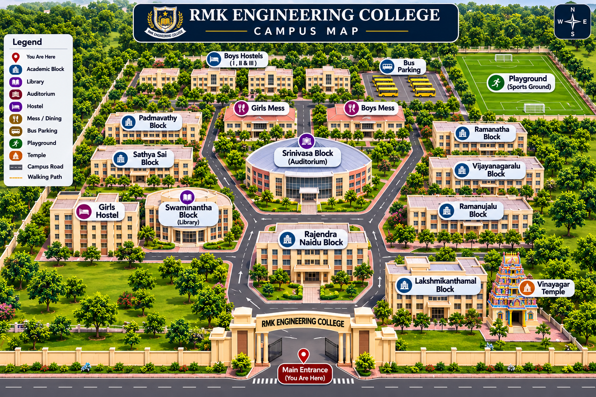

You are here
Campus Map Guide
Red Marker: Main Entrance (Start)
Blue Marker: Selected Destination
Blue Route: Walking Pathway
Touch or click any building marker on the map to switch your destination.